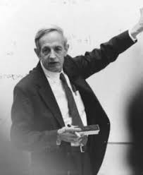
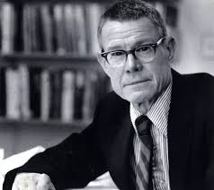
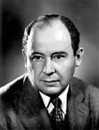
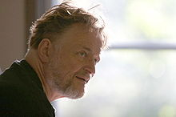
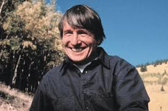
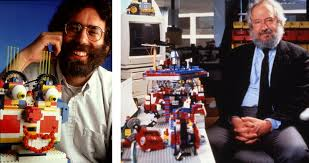

4 Algo de Historia
Muchos campos diferentes han aportado ideas y métodos a MOBA, nos centraremos en los antecedentes claves de las tecnologías MOBA de la informática y campos computacionales asociados. Además de los campos computacionales, notamos que también ha habido fuertes contribuciones de biología, física, ingeniería y ciencias sociales. En biología, estas contribuciones vinieron en gran parte de la ecología, el comportamiento individual de animales o plantas en un ecosistema, en lugar de trabajar con variables de nivel de población (DeAngelis y Mooij, 2005) trabajon con modelaje de lo individual, los modelos a menudo se ubican dentro de paisajes o entornos particulares, y los modeladores de MOBA se centran en cómo los paisajes pueden afectar en gran medida los resultados de un modelo (Grimm & Railsback, 2005). Gran parte de la metodología de MOBA se ha incorporado al trabajo en física, para describir el magnetismo y mostraron que modelos simples podrían producir transición de fase. Estos modelos también fueron precursores de la telefonía celular. el físico Per Bak creó el clásico modelo de las montañas de arena, que usó para ilustrar el concepto de autoorganización crítica, pasó a aplicar métodos basados en fenómenos complejos(como el modelo del Fuego y varios modelos bursátiles)
Per Bak
En ingeniería, ingeniería de procesos y cibernética, entre otras áreas de investigación, se ha contribuido al desarrollo de MOBAS En ingeniería de procesos, el objetivo es diseñar un óptimo resultados dados comportamientos de bajo nivel, que pueden considerarse como un marco similar al de los modelos basados en agentes, pero con un objetivo diferente, algunas de las herramientas y métodos de ingeniería de procesos también son útiles en el contexto de MOBA, Esto lleva a las nociones de cambios de fase de un sistema, es decir, áreas de espacio de parámetros donde pequeños cambios pueden tener consecuencias desproporcionadas (Wiener, 1961). Los modelos tienen que lidiar con la estocasticidad, lo que llevó a la técnicas de simulación de Monte Carlo (Metropolis & Ulam, 1949), al igual que con los ingenieros de procesos y cibernéticos, los científicos sociales se dieron cuenta de que las complejidades de las organizaciones sociales no eran capturadas suficientemente por los modelos y herramientas disponibles como resultado, los científicos sociales comenzaron a usar modelos algorítmicos y computacionales para describir los fenómenos sociales, con un método para comparar datos empíricos con datos por predecir similares a los de científicos naturales (Lave y marzo de 1975). Los modelos de teoría de juegos de Nash (1950) fueron algunos de los primeros intentos de capturar el comportamiento humano en ecuaciones matemáticas. La mayoría de estos modelos iniciales de ciencias sociales utilizaron datos agregados promediados entre individuos. por
Por ejemplo, el famoso modelo del Club de Roma hizo suposiciones muy simples sobre cómo el mundo y la población aumentaría y cómo se consumirían los recursos (Meadows, 1972).

John Nash
Estos esfuerzos dieron lugar con el tiempo al modelado dinámico de sistemas (SDM; Forrester, 1961), que propuso crear modelos utilizando existencias ( cantidades de bienes, entidades u objetos en ubicaciones particulares) y flujos (las tasas de aumento o disminución de estas existencias).los modeladores hicieron contribuciones importantes a los sistemas complejos, pero los elementos granulares de estos modelos eran cantidades agregadas, un paso lógico era bajar un nivel, modelando los individuos que componen estos agregados. Por lo tanto, el modelado basado en agentes fue una progresión natural que permitió un examen más profundo
del comportamiento de individuos heterogéneos. De hecho, en parte debido a esta necesidad de
ciencia para comprender el comportamiento individual en un marco cada vez más rico, algunas de los primeros modelos basados en agentes surgieron en las ciencias sociales. El modelo de segregación de Schelling (discutido en el capítulo 3) es considerado por muchos como uno de los primeros modelos basados en agentes que se creó, a pesar de que se realizó manualmente usando un tablero de ajedrez y monedas (Schelling, 1971). El libro de Schelling Micromotives and Macrobehavior (1978) demostró cómo las acciones a nivel individual podrían dar lugar a sorprendentes patrones sociales. Su modelo de segregación mostró que la segregación de la vivienda ocurriría incluso si ningún individuo lo quiere, siempre y cuando las personas tengan preferencia y no pertenezcan a una minoría extrema en su barrio.

Thomas Schelling
En la última década, hemos sido testigos de un tremendo crecimiento en el campo de la teoría de redes y la incorporación de soporte para redes como un elemento central en el modelado basado en agentes. Este trabajo en redes (grafos) fue iniciado por el matemático Euler en el siglo XIX para resolver el problema de los siete puentes de Konigsberg (ver Newman, 2010). En la década de 1950 y principios de los 60, los matemáticos Erdosy Renyi caracterizaron las redes aleatorias (1960), y esto fue seguido por el modelo de red preferencial de Albert Barabasi(1999). Los trabajos de psicólogos como Stanley Milgram sugirieron que la longitud de camino promedio en humanos en las redes sociales son cortas (seis grados de separación) (1967), una idea que luego formaliaron Duncan Watts y Stevan Strogatz con las redes de mundos pequeños Small Worlds,1998). Este tipo de redes y sus métodos de análisis asociados se han convertido en elementos básicos del modelado basado en agentes. Una historia completa de las raíces de MOBA en otros campos y el papel de dichos campos en el orígen de los MOBA está más allá del alcance de este capítulo, aquí, sin embargo, exploraremos algunos descubrimientos clave que dieron forma al desarrollo de MOBA, Presentamos aquí seis áreas importantes que describen varios de los principales antecedentes de las tecnologías asociadas a los MOBA
4.1 Autómatas celulares y modelado basado en agentes
John von Neumann contribuyó en gran medida a una gran cantidad de campos científicos, incluidos mecánica cuántica, teoría de juegos económicos y ciencias de la computación. De este matemático húngaro se dice que fue “el último de los grandes matemáticos” poseía el “intelecto más centelleante de este siglo.”A finales de la década de 1940, von Neumann, inventó la arquitectura moderna de la computadora (Máquina de VonNeumann), se interesó en tratar de crear máquinas artificiales que podrían reproducirse de forma autónoma,influenciado por su trabajo en la primera computadora (ENIAC; von Neumann et al., 1987), creo una máquina autoreproducible que el llamó un autómata celular que usaba veintinueve estados diferentes (¡usando lápiz y papel cuadriculado!) que llamó una máquina universal (Burks, 1970). Aunque una máquina física aún no había sido construida, esta máquina fue prueba del concepto de que una máquina auto-reproductora podría ser construida, no solo construyó una máquina capaz de autorreplicarse, sino también una que podía evoluciónar, ya que las instrucciones podrían modificarse y agregarse al comienzo de cada generación sucesiva para proporcionar más y más capacidades.

John Von Neumann
Sin embargo, en 1970, John Conway creó un celular mucho más simple un autómata que llamó el “Juego de la vida”, Debido a la falta de suficiente poder computacional, Conway utilizó un tablero físico para llevar a cabo sus experimentos y no una computadora. “Life” se hizo popular cuando Martin Gardner publicó el juego en su popular columna Scientific American (Gardner, 1970). El juego de la vida de Conway tiene tres reglas:
- Si una celda tenía exactamente tres vecinos (de sus ocho vecinos inmediatos), pasaría de estar muerto a estar vivo (nacimiento).
- Si tuviera dos o tres vecinos y estaba vivo, permanecería vivo (sin cambios)
- Si tuviera alguna otra combinación de vecinos, iría al estado muerto (soledad o hacinamiento).
Cuando Conway alimentó el juego con un conjunto aleatorio de células vivas y muertas, el sistema comenzó a producir patrones hermosos e intrincados de objetos interesantes.Notablemente, aunque las regla de Conway requería solo dos estados, (vivos o muertos) y nueve entradas (la celda y sus ocho vecinos), Conway probó que sus regla de “Vida” (Berlekamp et al., 1982) contenían el material necesario para la auto-reproducción, es decir, el sistema podría crear una entidad computacional que podría crearentidades computacionales adicionales. Sin embargo, el poder del Juego de la Vida no termina ahí. En 2009, Adam Goucher construyó una computadora / constructor universal dentro del juego de la vida de Conway y demostró que las reglas del juego de la vida eran suficientes calcular todos los posibles problemas (Hutton, 2010).

John Conway
Casi al mismo tiempo que algunos de los primeros trabajos de Conway, y después del trabajo de von Neumann fallecido en 1957, Arthur W. Burks, uno de los colaboradores de von Neumann, siguió examinando los autómatas celulares como parte del grupo Logic of Computers de la Universidad de Michigan. Eventualmente editó una colección de la mayoría de los documentos originales sobre autómatas celulares en un libro titulado Theory of Self-Reproducción (von Neumann y Burks, 1966). Burks también fue asesor de John H. Holland, del cual hablaremos más adelante. El trabajo de Burks preservó el estudio de los AC hasta que Stephen Wolfram lo revivió a principios de la década de 1980 (Wolfram, 1983). Wolfram hizo varias contribuciones notables al campo de los autómatas celulares, Por ejemplo, él realizó un estudio exhaustivo de todas las reglas unidimensionales para mundos bidimensionales, celdas que tienen solo vecinos izquierdo y derecho . Incluso esta simple clase de AC exhiben un comportamiento sorprendentemente complejo. Wolfram los dividió en cuatro clases:
- De estado final uniforme
- De estado final cíclico.
- De estado final aleatorio.
- Deestado final complejo.
Wolfram demostró que estos cuatro tipos de patrones pueden generar muchos patrones encontrados en la naturaleza. Wolfram y Ed Fredkin del MIT despertaron mucha controversia cuando hicieron la afirmación de que todo el universo puede modelarse utilizando AC o, aún más sorprendente, la posibilidad de que el universo mismo es un automata celular (Wolfram, 2002; Fredkin, 1990).
Stephen Wolfram
La relación histórica entre AC y MOBAs es algo desordenada. Muchos autores han escrito que las AC condujeron directamente al desarrollo de los MOBA De hecho, las AC se pueden ver como MOBAs simples donde todos los agentes son estacionarios: en contraste con los AC, más generales Los MOBA también pueden incluir agentes que se mueven explícitamente. Su capacidad de tener agentes móviles, permite a los investigadores representar y modelar objetos en movimiento de forma más natural. Como resultado de esta similitud, se podría suponer que los MOBAs fueron una evolución natural de los autómatas celulares, Sin embargo, hay poca evidencia de que los desarrolladores de los primeros MOBAs; por ejemplo, Schelling y sus colegas comenzaron con una AC a partir de la cual hallan desarrollado un modelo basado en agentes, estos investigadores estaban al tanto del trabajo de AC, pero, a juzgar por entrevistas con varios de ellos, parece que desarrollaron la noción de modelado basado en agentes independiente del trabajo en curso de la teoría de AC. En muchos sentidos, las AC (y el Juego de la vida de Conway en particular) exhiben muchas de las propiedades de los modelos modernos basados en agentes. Cada celda se puede ver como un agente con una descripción simple del estado. Las acciones que toma para cambiar su estado en función de sus vecinos son similares a las acciones que los agentes toman en respuesta a las interacciones locales. Los AC de Von Neumann estuvieron entre los primeros intentos de crear modelos computacionales de un sistema biologico. Además, la escala de tiempo discreta de los ACes muy similar a la a los ticks de un MOBA, el modelo “Life” de Conway también exhibe muchos comportamientos que a menudo se ven en los Moba (El resultado final del modelo es difícil de predecir sobre la base de las entradas iniciales, y son patrones emergentes que solo pueden describirse a un nivel superios). Por último, el trabajo de Wolfram para clasificar las reglas de los AC en clases de comportamiento fue un ejemplo temprano de los intentos de la ciencia de la complejidad de entender nuestro mundo tomando grandes cantidades de fenómenos dispares y clasificándolos en grupos para ayudar a entender las similitudes entre sistemas que, a primera vista, parecen completamente no relacionados.
4.2 Algoritmos genéticos, John Holland y sistemas adaptativos complejos
En informática, los algoritmos se han diseñado tradicionalmente como artefactos de ingeniería. La inspiración para estos algoritmos provino de aplicaciones de ingeniería como el ensamblaje de líneas de producción, construcción de puentes e incluso sistemas de alcantarillado. A finales de la década de 1960, un joven ingeniero eléctrico lamado John Holland se topó con el trabajo de Donald Hebb. En el libro de Hebb, Organización del comportamiento (1949), el psicólogo había escrito sus ideas sobre cómo las neuronas pueden considerarse algoritmos simples. Frank Rosenblatt (1962) fue influenciado mediante estas ideas para construir un modelo computacional de neuronas humanas, al que llamó perceptrón, Rosenblatt utilizó este modelo para resolver problemas informáticos convencionales de modos que él afirmó eran similares a como la mente humana resuelve los problemas. Esta técnica eventualmente resultaría desembocando en el campo moderno de las redes neuronales. En este naciente campo, Holland tuvo una idea poderosa:
se dio cuenta de que un perceptrón era esencialmente un modelo de cómo una neurona se adapta a sus entradas y salidas. Por lo tanto, el perceptrón no era solo un modelo estático de la mente, pero también, uno de adaptación mental al mundo. Holland comenzó a prguntarse si era posible hacer más universal este modelo de adaptación, específicamente, comenzó a pensar en la adaptación evolutiva y cómo podría una computadora modelar la evolución. Presagiando un principio general de sistemas complejos, Holland intentó generalizar su modelo teórico de un dominio computacional y lo aplico ampliamente a otros dominios. La adaptación parecía (al menos en algún nivel) existir en, por ejemplo, tanto en las neuronas en el cerebro , como en las especies se adaptan a los cambios climáticos. Mediante la extracción de la esencia de la adaptación a un principio universal, Holland arrojó nueva luz sobre como entender muchos sistemas adaptativos, encontrando una perspectiva muy importante, y hoy en día central, de los sistemas complejos. En 1975, John Holland publicó su monografía Adaptation in Natural and Artificial Systems, Este trabajo fue la culminación de sus primeros años en la investigación de la adaptación. y resultó en la idea del algoritmo genético (AG). En esencia, los AG crean una población de soluciones a un problema, y evaluan qué tan efectivas son las soluciones para resolver el problema, luego combinan y mutan las mejores soluciones para crear una nueva población. Esta nueva población vuelve a ser evaluada y el proceso es repetido. El AG fue un desarrollo único en informática ya que postuló el uso de modelos biológicos para resolver problemas computacionales, evolucionando poblaciones de soluciones a problemas de búsqueda.
Holland usó los AG para programar computadores para jugar. Sus pensamientos sobre las computadoras y el juego estuvieron muy influenciados por el trabajo de Samuel en el aprendizaje automático y el juego de damas (Samuel, 1959). Holland pensó que las computadoras podrían resolver problemas aún más complejas si los programas para jugar no solo pudieran cambiar sus acciones sino también sus estrategias a lo largo del tiempo, imagino la evolución de estrategias para jugar. Estas ideas condujeron naturalmente a la construcción de agentes adaptativos que pueden cambiar y adaptarse a sus alrededores. Holland comenzó su estudio de los agentes adaptativos con tanto ahinco a como anteriormente había estudiado la evolución, comenzó con datos del mundo real y luego desarrolló modelos informáticos de estos sistemas, desde el principio (alrededor de 1985) comenzó a trabajar con el Instituto Santa Fe (SFI), un instituto de investigación dedicado al estudio de sistemas complejos. En una reunión en el Instituto Santa Fe en septiembre 1987, Holland presentó sus ideas de cómo la economía entera podría ser vista como un sistema adaptativo complejo compuesto por agentes adaptativos (Holland, 1995) y conoció a Brian Arthur, y influenciado por el trabajo de Holland desarrolló uno de los primeros modelos en economía que empleaban la miodelación basada en agentes Durante este tiempo, muchos investigadores del Instituto Santa Fe, como Holland, Arthur, Anderson, Arrow y Pines, se interesaron en modelar la economía como un complejo sistema evolutivo. Este esfuerzo de investigación resultaría en uno de los primeros modelos clásicos basados en agentes, el Mercado de Valores Artificiales del Instituto Santa Fe (Arthur et al,1997).

John Holland
Holland también influenció desde el principio a un grupo de sus compañeros de la Universidad de Michigan: Burks, Axelrod, Cohen y Hamilton. Todos estos investigadores (que juntos se llamaronellos mismos, el grupo BACH) serían influyentes en el campo de los sistemas complejos, y algunos incluso incursionaron en el modelado basado en agentes. Axelrod creó el famoso dilema del prisionero (Prisoner Dilemma) (Axelrod, 1984) Holland comenzó a investigar una generalización del algoritmo genético, El sistema clasificador, basado en el principio de una jerarquía predeterminada, el sistema clasificador evolucionaría reglas o “clasificadores” que traducirían entradas en salidas para satisfacer un objetivo. El sistema clasificador contenía una población de reglas simples que funcionaban juntas para modelar fenómenos complejos Esto es similar a la forma en que un MOBA contiene una población de agentes simples que trabajan juntos para modelar un fenómeno complejo. Por otra parte, el sistema clasificador fue un primer intento de crear agentes verdaderamente adaptativos, ya que contenía un algoritmo para que los agentes desarrollaran estrategias arbitrariamente complejas. En los años siguientes, Holland trabajó con dos estudiantes de posgrado, Melanie Mitchell. y Stephanie Forrest. Juntos, comenzaron a explorar el uso del algoritmo genético en diversos escenarios relacionados con la vida artificial (Mitchell y Forrest, 1994). Mitchell demostró (1998) que los algoritmos genéticos podrían encontrar mejores soluciones para los problemas de autómatas celulares clásicos. Luego realizó una investigación básica y escribió un libro de texto introductorio sobre sistemas complejos (2009) que describe la relación entre complejidad y computación, evolución e inteligencia artificial, Forrest continuaría expandiéndose sobre estas ideas y creando sistemas inmunes artificiales (AIS; Hofmeyr y Forrest, 2000).
Melanie Mitchell
4.3 Seymour Papert, Logo y la tortuga
A fines de la década de 1960, Seymour Papert fue nombrado codirector del laboratorio Inteligencia Artificial del MIT junto con su colega Marvin Minsky. Papert había llegado al MIT después de terminar su doctorado en matemáticas en Cambridge y pasó varios años estudiando el pensamiento matemático de los niños con Piaget en el Instituto Jean Piaget en Ginebra, Suiza. Poco después de su llegada al MIT, comenzó a colaborar con científicos y crearon un lenguaje de programación, Logo, diseñado para ser utilizado por niños. Logo heredó gran parte de su forma y sintaxis del lenguaje Lisp, que se usó prominentemente en el trabajo de Inteligencia Artificial.Papert creía que dar acceso a los niños a la programación les permitiría convertirse en pensadores y darles acceso a ideas poderosas (Papert, 1980). Llamó a este enfoque educativo construccionismo. Después de trabajar con Logo por un año, Papert inventó la “tortuga”, un objeto que estaba controlado por el lenguaje Logo. Algunas tortugas tempranas eran mecánicas (Walter, 1950) y estaban atadas a la computadora. pero pronto la tortuga se volvió virtual. Las tortugas tenían propiedades como la ubicación en la pantalla, una “cabeza” (dirección) a la que estaban mirando y una pluma para dejar huellas. Cada tortuga obedeció comandos, como “avanzar”, “girar a la izquierda”, etc. Al emitir comandos a la tortuga, los niños podían dibujar figuras geométricas clásicas, así como repetitivas y recursivas (fractales) Posteriormente, el lenguaje LOGO se introdujo en las escuelas, con la participación de millones de niños en todo el mundo, mucho del éxito de LOGO se atribuyó a la tortuga. Papert describió a la tortuga como un “cuerpo sintonico” (1980): un usuario podría “proyectarse” en la tortuga y de esta manera descubrir qué comandos la tortuga debe efectuar, los usuarios podrían imaginar lo que harían con sus cuerpos para lograr el efecto deseado. Entonces, para dibujar un cuadrado, el usuario avanzaría, giraría a la derecha, avanzar la misma cantidad, y así sucesivamente. En miles de aulas LOGO, niño jugaron con la tortuga y aprendieron mucho sobre figuras geométricas y de paso sobre cómo programar computadoras de esta manera. La tortuga LOGO puede haber sido el primer agente computacional en el sentido en el que pensamos hoy a los agentes de un MOBA. Al igual que los agentes de NetLogo, la tortuga Logo tiene una ubicación y dirección, y su poder se basa en que los usuarios puedan proyectarse en él, que es imaginar ser una tortuga. NetLogo tomó gran parte de su sintaxis de Logo y la expandió a miles de tortugas. Las tortugas NetLogo suelen “dibujar” con sus cuerpos en lugar de con sus bolígrafos, y es la configuración de sus cuerpos lo que crea una visualización de NetLogo (Wilensky, 2001). NetLogo también tomó prestado el eslogan “umbral bajo, techo alto” de LOGO, lo que significa que debería ser lo suficientemente simple para que los principiantes sean capaz de trabajar con él de inmediato y, sin embargo, lo suficientemente potente como para que los expertos realicen sus investigaciones con él (Tisue y Wilensky, 2004). Además, NetLogo se basó en la sintaxis de LOGO hacer que su lectura sea lo más cercana posible al lenguaje natural. La influencia de Papert y Logo puede verse no solo en NetLogo, sino también en la forma que muchas plataformas de modelado basadas en agentes conceptualizan a los agentes como entidades con sus propias propiedades y acciones. La mayoría de las primeras plataformas de modelado basadas en agentes, como Swarm (Minar et al., 1996) y Repast (Collier, 2001), consideraron dada la necesidad de visualizar agentes en una pantalla 2D, de la misma manera que la tortuga Logo se proyectó en una pantalla 2D.

Mitch Resnick, Seymour Papert y la tortuga
4.4 Paralelismo de datos
A mediados de la década de 1980, Danny Hillis completó su tesis doctoral en el MIT sobre arquitectura de una computadora paralela que él llamó una “máquina de conexión.”A diferencia de la arquitectura clásica de Von Neumann, arquitectura de la mayoría de las otras computadoras en ese momento, la máquina de conexión (o CM) no manejaba todos sus cálculos a través de una sola unidad central de procesamiento (Hillis, 1989). En lugar de eso hacía uso de miles de procesadores de bajo costo y baja capacidad conectados entre sí de tal manera que cada procesador pudiera comunicarse con cualquier otro, el CM empleó una arquitectura que se llamaba, “Instrucción única, datos múltiples”, generalmente abreviado SIMD, que daba una misma instrucción a cada uno de los miles de procesadores, cada uno de los cuales contenía elementos de datos. Hillis fundó una empresa, Thinking Machines, para fabricar y vender la computadora. Al principio, la máquina se percibía como difícil de programar, ya que los lenguajes de programación estándar no funcionaban eficientemente en la máquina. A finales de la década de 1980, se crearon lenguajes paralelos como StarLisp (una versión paralela de Lisp) y C-Star para programar el CM. El CM-2 tenía 65.536 procesadores, y para usarlos eficientemente era importante no tener algunos procesadores esperando a otros. La forma más fácil de hacer esto era utilizar métodos de“paralelismo de datos”, en los que los datos se distribuían de manera uniforme en los procesadores, cada uno de los cuales ejecutaba simultáneamente la misma instrucción en sus datos. El físico Richard Feynman, junto con Stephen Wolfram, desarrollaron una aplicación de mecánica de fluidos de en un autómata celular (Tucker y Robertson, 1988), Feynman había demostrado que casi todos los flujos de fluidos podían modelarse independientemente del tipo de partícula, usando una red hexagonal. Entonces Feynman y Wolfram eligieron partículas esféricas para calcular el cambio en cada hexágono de la red usando paralelismo de datos, l resultado fue una hermosa visualización de fluidos turbulentos, este y otros ejemplosmparecidos han sido tomados por modeladores basados en agentes y pueden ejecutarse en hardware en serie utilizando métodos MOBA El paradigma paralelo de datos SIMD en última instancia no tuvo éxito en el mercado de hardware, pero, sus métodos de dar la misma instrucción a múltiples procesadoresinfluyeronen los lenguajes para MOBAs, que también daban instrucciones únicas a múltiples agentes distribuidos En esencia, el modelo paralelo de datos fue adoptado por MOBA.
Danny Hillis
4.5 Gráficos por computadora, sistemas de partículas y boids
Los gráficos por computadora han avanzado notablemente con el resto de la informática,a medida que las computadoras se han vuelto cada vez más rápidas, las pantallas de las computadoras han mejorado para renderizar visualizaciones cada vez más realistas e imágenes basadas en computadora. Los gráficos por computadora tienen como objetivo tomar una imagen dentro de la cabeza del autor y traducirla en una imagen o representación en el computador,esto tiene mucha similitud con el modelado por computadora,el objetivo es tomar un modelo conceptual y traducirlo en un artefacto computacional. Así que no o sorprende que los gráficos por computadora hayan influido en el modelado basado en agentes. Al principio de los gráficos por computadora, muchos desarrolladores usaron una gran combinación de planos y superficies para representar objetos. Esto resultó ser una buena primera aproximación: después de todo, la vasta mayoría de nuestro rango visual generalmente está ocupado por superficies, como paredes y techos,el cielo o un camino delante de nosotros. Sin embargo, las superficies no son una representación adecuada para fenómenos menos claramente definidos como el humo o las estrellas o la luz (Blinn, 1982). Para modelar estos fenómenos, los desarrolladores de gráficos por computadora recurrieron a representaciones puntuales. Los puntos podrían tener tamaño, posición y velocidad y se creará una representación más natural para estos fenómenos que las superficies. Además, los puntos eran más fáciles de trabajar y sus reglas de movimiento eran más fáciles de tratar que las superficies. El enfoque basado en puntos para gráficos por computadora se conoció como sistemas de partículas (Reeves,1983). Tales sistemas tienen mucho en común con el modelado basado en agentes porque se pueden simular fenómenos emergentes visualmente , como el humo que sale de una chimenea, modelando las partículas individuales de humo y escribiendo reglas simples de cómo interactúan para visualizar el patrón global resultante. Modelos basados en agentes igualmente usan reglas simples de interacción basada en agentes y luego te permite observar el fenómeno global. Inspirado por el uso de sistemas de partículas y el trabajo antes mencionado sobre tortugas y LOGO, Craig Reynolds fue más allá del concepto de partículas y los usó para describir el movimiento de las aves que vuelan en bandadas (Reynolds,1987),Reynolds llamó a estas configuraciones Flocados (Flocks) y a las criatura voladoras Boids y usó tres reglas simples para describir su comportamiento:
- Los Boids de separación no deben acercarse demasiado a ningún otro objeto en el entorno.
- Los Boids de alineación deben dirigirse hacia el mismo rumbo que sus compañeros locales
- Los Boids de Cohesión deberían moverse hacia el centro de su grupo local.
A pesar de la simplicidad de estas tres reglas, Reynolds pudo lograr un vuelo (flocado) realista, de hecho la interacción local de estas reglas no solo permitió a Reynolds desarrollar un modelo que agrupába los Boids a nivel global, sino que cada grupompequeño de BOIds se comportaba como uno solo,por ejemplo, si se introduce un obstáculo en el vuelo de los Boids estos pueden dividirse fácilmente en dos bandadas, moverse alrededor del objeto y luego volver a ensamblarse. Todo esto se logró solo con las tres reglas y sin ningúna modificación adicional al modelo.El modelo “Boids” fue en muchos sentidos un modelo basado en agentes, aunque este término no estaba en uso en esa época, el hecho de que los grupos pudieran adaptarse a situaciones novedosas (por ejemplo, la introducción de un objeto extraño) sin interrumpir el patrón emergente es un ejemplo clásico de cómo un MOBA bien escrito es generalizable más allá de las condiciones para las cuales fue concebido originalmente. Como los MOBA no requieren una descripción global del sistema, no necesitan anticipar todos lo posibles eventos que pueden suceder. Poco después de la presentación de Reynolds del modelo Boids en SIGGRAPH ’87, Chris Langton organizó el primer taller sobre Vida Artificial, donde el modelo de Reynolds también fue presentado. La vida artificial se ha convertido en una comunidad que abarca muchos de estos diferentes métodos de computación en los que se utilizan computadoras para emular humanos y sistemas biológicos La Vida Artificial, por lo tanto, comenzó a usar sistemas como los Boids de Reynolds,Los autómatas celulares de von Neumann y los algoritmos genéticos de Holland. Aunque la vida artificial es distinta del modelado basado en agentes en el sentido que su objetivo es construir sistemas que reflejenobjetos realistas dentro de una computadora, muchos de los métodos y técnicas de MOBA y de vida artificial son bastante similares.
Craig Reynolds
4.6 Conclusión
los MOBAs han recorrido un largo camino desde los días de Thomas Schelling (1971) lanzando monedas en un tablero de ajedrez. Estas seis viñetas han intentado arrojar algo de luz sobre las raíces de este campo. Sin embargo, el campo aún es bastante joven. Existe una considerable investigación que aún no se ha llevado a cabo sobre cómo implementar mejor MOBAs, qué herramientas son más útiles para soportarlos, y dónde aplicarlos mejor. Está claro que los modelos basados en agentes se han convertido en un metodología y conjunto de herramientas importantes para comprender sistemas complejos en las ciencias naturales, las ciencias sociales y la ingeniería.